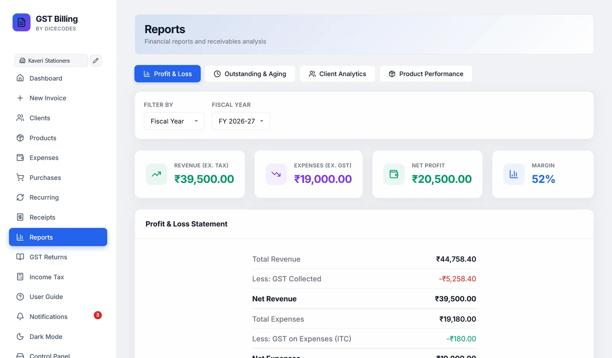
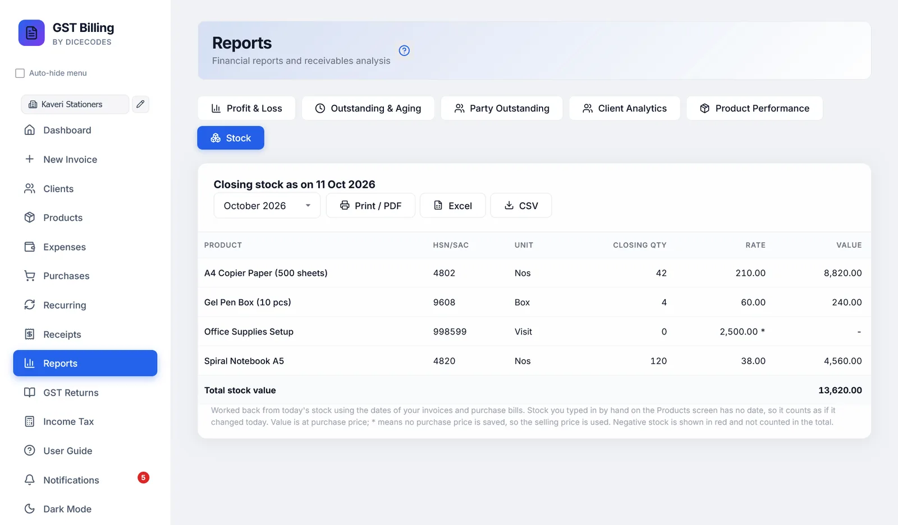

Reports
Profit and loss, who owes you and for how long, party outstanding by month, your best clients, your best-selling products, and closing stock with its value. Every report prints and downloads as Excel or CSV.
#What the reports include
The sales tabs cover the business selected in the sidebar and count only real sales, as the Dashboard does: tax invoices, bills of supply and composition bills count; credit notes are subtracted; proforma estimates, delivery challans and cancelled invoices are left out. Purchase bills are not part of these reports; they are in Income Tax, ITR Summary.
#Printing and downloading a report
Every report table has three buttons:
| Print / PDF | Opens the table alone on its own page. Choose your printer, or Save as PDF. |
| Excel | Downloads an .xlsx file. Amounts are numbers, so Excel can total and sort them. |
| CSV | The same table as CSV, for any spreadsheet or your CA's software. |
They export what the screen shows: the period, currency and filters you chose. The Expense statement and Purchase register have the same buttons on their own screens.
#Profit & Loss
Choose Fiscal Year or Month / Year. If you bill in more than one currency, a Currency choice appears, since different currencies are never added together.
| Revenue (ex. tax) | Sales without GST |
| Expenses (ex. GST) | Expenses without their GST |
| Net Profit or Net Loss | The difference. Green for profit, red for loss. |
| Margin | Profit as a percentage of revenue |
The Profit & Loss Statement sets it out: total revenue, less GST collected; total expenses, less GST on expenses; and the result. The Monthly Breakdown shows revenue, expenses and profit or loss for each month with activity.
The same period choice appears on the Client Analytics and Product Performance tabs. Losses show with a minus sign.

#Outstanding & Aging
Every unpaid or part-paid invoice, whatever its date, grouped by how late it is: Current (0-30 days), 31-60, 61-90 and 90+ days, counted from the due date.
The table lists client, invoice, date, due date, amount, paid, outstanding and days overdue, latest first, with the worst in red. Filter by client name… narrows the table and the totals together.
#Party Outstanding
The same money owed, laid out the way Tally does it: one row per party, one column per month, a Total for each party on the right and for each month at the bottom. Each unpaid amount sits in the month of its invoice.
- Choose Financial year (Apr-Mar), the default, or Calendar year (Jan-Dec), and the year.
- Bills from before that year that are still unpaid appear in an Earlier column, so nothing owed drops out of the total.
- Print / PDF opens the table on its own page, landscape; choose your printer or Save as PDF. Excel and CSV download it.
Only sales count; estimates, challans and cancelled invoices are left out. With invoices in more than one currency, pick the currency.
#Client Analytics
- Top clients by revenue: the ten who bought the most, with invoice counts.
- Highest outstanding: the ten who owe the most, and what share of their billing is unpaid.
- All clients breakdown: invoices, revenue, paid, outstanding and last invoice date for everyone.
Revenue here includes GST.
#Product Performance
- Top revenue producers: the ten items that brought in the most.
- Most units sold: the ten sold in the largest quantity.
- All products: HSN, quantity sold, revenue, average rate, number of sales and when last sold.
Revenue here is after line discounts and without tax. Credit notes are subtracted. Delivery charges are not a product and are left out.
#Stock
Closing stock of every product at the end of a month, and what it is worth. Choose the month; the current month shows today's stock.
- Closing qty is worked back from today's stock, using the dates of your invoices and purchase bills.
- Rate is the purchase price. A product with no purchase price is valued at its selling price, marked with *.
- Value is quantity × rate, with the Total stock value at the bottom. Negative stock shows in red and is not added in.
Stock you typed in by hand on the Products screen has no date, so it counts as if it changed today. Products are shared by all your businesses, so this report covers every business.
